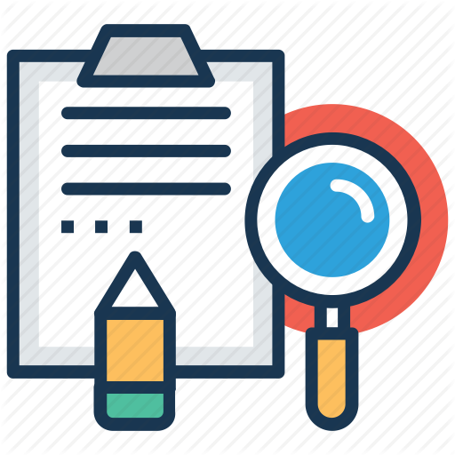

<div class="home">
    <div class="post-list"> 

    {% for post in site.posts %}

    <!-- Generate the post URL -->
    <!-- It is either a local URL or and outside URL if you want -->
    <!-- to reference your own blog / website. -->
    {% assign publication_url = post.url %}
    {% if post.url_outside %}
        {% assign publication_url = post.url_outside %}
    {% endif %}

    {% if post.categories contains "news" %}
      <div style="display:flex; margin-bottom:20px; border: 1px solid #AAA; padding: 10px; border-radius: 5px; background-color: #EEE; 
      box-shadow: 0 3px 8px 0 rgba(0,0,0,0.03);">
        <div class="publication-image" style="margin-right:15px;">
            <a href="{{ publication_url | prepend: site.baseurl }}">
            {% if post.thumbnail %}
                
            {% else %}
                
            {% endif %}
            </a>
        </div>
        <div class="publication-bibliography">
            <!-- Publication title -->
            <div class="publication-title">
                <a href="{{ publication_url | prepend: site.baseurl }}">
                <span style="font-weight:600; font-size:1.2em;">{{ post.title }}</span>
                </a>
            </div>

            <!-- Generate author list -->
            <div class="publication-authors">
                {% assign authors_size = {{post.authors.size | minus: 1 }} %}
                {% for index in (0..authors_size) %}
                
                {% assign author = post.authors[index] %}

                {% assign author_infos = site.data.members | where: "name", author.name %}
                {% if author_infos.size > 0 %}
                    {% assign author_affiliation = "Unity Technologies" %}
                    {% assign author_url = author_infos[0].url %}
                {% else %}
                    {% assign author_affiliation = author.affiliation %}
                    {% assign author_url = author.url %}
                {% endif %}
                <span class="publication-authors-name">
                    <a href="{{ author_url }}">{{ author.name }}</a>{% if index != authors_size %},{% endif %}
                </span>
                {% endfor %}
            </div>
            <div style="font-style:normal;">
                {{ post.date }}
            </div>
            <br />

            <!-- Content of the post -->
            <div>
                {{ post.content }}
            </div>
        </div>
      </div>
    {% endif %}
    {% endfor %}
    </div>
    </div>

  <!-- <p class="rss-subscribe">subscribe <a href="{{ "/feed.xml" | prepend: site.baseurl }}">via RSS</a></p> -->
</div>
